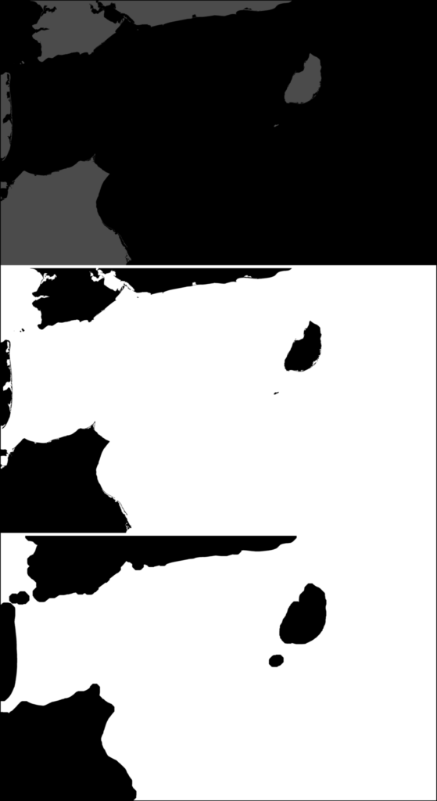

Preprocessing
IFT operates on optical satellite imagery. The main functions are designed with "true color" and "false color" imagery in mind, and have thus far primarily been tested on imagery from the Moderate Resolution Imaging Spectroradiometer (MODIS) from the NASA Aqua and Terra satellites. The preprocessing routines mask land and cloud features, and aim to adjust and sharpen the remainder of the images to amplify the contrast along the edges of sea ice floes. The functions use three different images: a land mask, a true color image, and a false color image. Examples are based on the NASA MODIS dataset.
Land masks
Landmask generation and dilation is handled by the function create_landmask. Landmask images from file are loaded as RGB matrices. This example uses an image from NASA EarthData landmask for Beaufort Sea.
using IceFloeTracker
rgb_landmask = IceFloeTracker.load(<landmask_path>);
landmask_imgs = IceFloeTracker.create_landmask(rgb_landmask);The landmask_imgs object includes a binary version of the original landmask and a dilated version, which helps to cover the complicated near-coastal regions.
At the top, we have the original landmask TIFF, which has black and gray values. The middle image is the binary image, with land set to 0. At the bottom, we can see the dilated image using the default value of the structuring element. The default has radius 50, which results in a coastal mask of 12.5 km based on the 250 m pixel size of default MODIS imagery.
Cloud masks
Setting thresholds for cloud mask